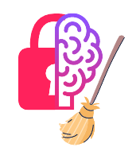
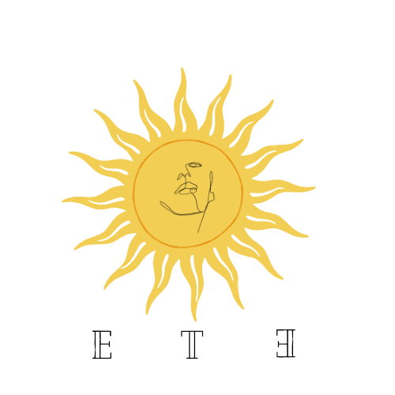
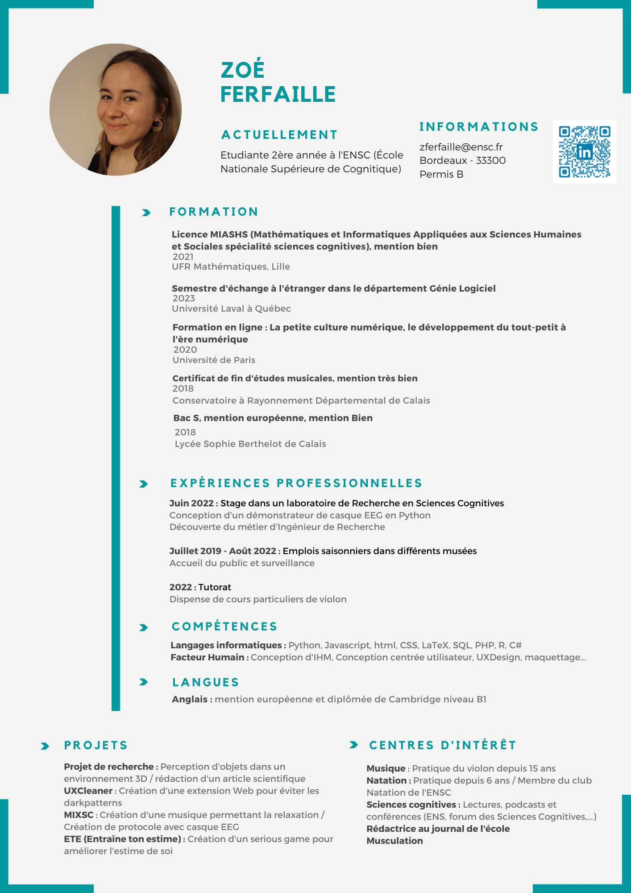

En ce moment
Actuellement en stage, j'occupe le poste de chargée de projet de recherche en comportement alimentaire.
Le projet est un Appel à Manifestation d'Intérêt de la Métropole Lilloise, en collaboration avec JUNIA et l'Anthropo-Lab.
JUNIA développe une expertise et une offre autour de l'analyse sensorielle, et l’Anthropo-Lab est un laboratoire d'anthropologie expérimentale qui vise à comprendre et faire évoluer les comportements humains. Mon rôle est d’identifier des marqueurs physiologiques qui traduisent l’appréciation et les émotions lors d’un acte de consommation.
Mes missions sont :
● Recherches bibliographiques
● Mise en place d’expérimentations
● Analyses des résultats
● Présentation des résultats
Compétences
| Langages informatiques | Facteurs humains | Soft Skills |
|---|---|---|
| Python C# HTML CSS JavaScript PHP SQL RStudio Kotlin Matlab |
CCU UXDesign Maquettage Conception d'IHM |
Curiosité Adaptabilité Empathie |
Réalisations
Stage Ingénieure de Recherche - 2022J'ai travaillé un mois aux côtés d'une Ingénieure de Recherche dans un laboratoire de Sciences cognitives Scalab à Lille. Mes missions étient de prendre en main un casque EEG OpenBCI, de faire une fiche technique et de réaliser un démonstrateur. J'ai pu mettre en place mes compétences en langage Python pour coder un démonstrateur capable de streamer les données du casque en direct, de diffuser sur l'écran une stimulation visuelle périodique et d'enregistrer et traiter les données sous formes de graphiques. Voir le rapport |
Travail Encadré de Recherche (TER) - 2020 / 2021Projet encadré par un chercheur en sciences cognitives sur l'étude du lien entre la perception d'objets dans un environnement 3D et la motricité. J'ai eu l'occasion de faire une revue de littérature, d'organiser les passations expérimentales, d'analyser les données, et de rédiger le rapport sous forme d'article scientifique Voir le rapport |
|
 UXCleaner - 2023Réalisation d'une extension web permettant de détecter les dark pattern et le dark UX. Implémentation d'un score permettant d'évaluer la fiabilité d'un site web. Réalisation d'une maquette et observations d'utilisateurs. Mon rôle était à la fois d'encadrer une partie de l'équipe en mettant en application mes apprentissages de gestion de projet et de connaissances. Je faisais également partie du pôle UX, en charge de la maquette de l'extension, de l'idéation des détections de dark patterns, et de mise en place des oberservations utilisateurs. Voir la maquette |
|
 Projet Entraîne Ton Estime (ETE) - 2021Le projet visait la réalisation d'un serious game permettant l'entraînement et l'amélioration de l'estime de soi. Etant dans le pôle Recherche, mes missions étaient les suivantes : recherches sur l'état de l'art, idéation d'un protocole expérimental, création de tests permettant d'évaluer l'estime de soi et passations expérimentales. |

M.I.x.S.C - 2021-2022Notre projet avec un client extérieur était d'étudier le lien entre les émotions et la musique. Nous avons donc créé une musique utilisant les battements bi-neuronaux, permettant la relaxation. Pour mesurer le niveau de relaxation; nous avons utilisé le casque EEG EMOTIV. Nous avons ainsi réalisé un état de l'art, crée une musique ainsi qu'un protocole expérimental. Enfin nous avons traité et analysé les données. |
